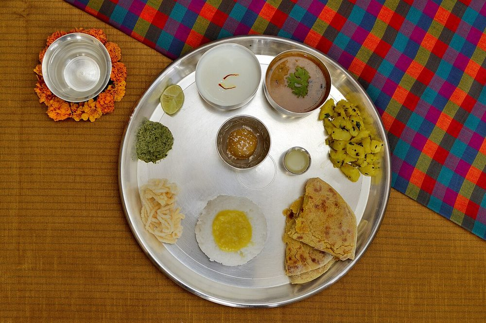

Hirvi Mirchi Cha Thecha
pounded green chilli and garlic relish, fierce and smoky, eaten with bhakri

Contains: peanuts
Ingredients
Quantities for 6.
- 15 hot green chillies (about 100g), stems removed Green Chilliuse fewer if you value your evening
- 10 cloves, peeled Garlic
- 1 tsp Cumin Seeds
- 3 tbsp Groundnut Oil
- 1/4 cup, chopped Coriander Leavesoptional
- 1/2 Lemonbrightens it; optionaloptional
- 1 tsp, or to taste Salt
Cookware
stovetop, tawa, blender
Checked against the ingredient list for ten allergens: milk, egg, fish, crustaceans, tree nuts, peanuts, sesame, mustard, soy and gluten. Brands vary, so read the label on anything new to you.
Before you start
- Open a window and turn on the extractor before you start. Dry-roasting fifteen green chillies fills a kitchen with capsaicin fumes.
- Wear gloves or oil your hands before handling the chillies, and do not touch your face for the next hour.
- A stone mortar (khal-batta) gives the real texture. A blender works but use short pulses only.
Method
- Heat 1 tbsp oil in a flat pan and add the whole chillies and garlic cloves.
- Roast over medium heat 6-8 minutes, turning often, until the chilli skins blister and blacken in patches and the garlic is soft and browned.Those blistered patches are the smokiness of the whole dish. Blackened is right; uniformly charred is not.
- Add the cumin seeds in the last 30 seconds, just to warm them through.
- Cool for 5 minutes, then pound in a mortar with the salt to a coarse, uneven paste. Visible flecks of chilli skin, not a smooth puree.If using a blender, pulse 3 or 4 times only. Thecha ground smooth turns watery and loses its bite.
- Work in the coriander with a few more pounds.
- Heat the remaining 2 tbsp oil until it just smokes, pour it over the thecha and stir it through.
- Squeeze in the lemon if using, taste for salt, and serve alongside jowar bhakri, plain rice or dal.
Storage
Keeps 5 days refrigerated in a clean jar with a film of oil on top. It gets hotter for the first two days, then settles.
Nutrition Good estimate
Low protein: 1 g a serving, 4% of the calories
| Per serving31 g | Per 100 g | |
|---|---|---|
| Calories | 77 kcal | 250 kcal |
| Protein | 0.8 g | 3 g |
| Carbohydrate | 3.6 g | 12 g |
| of which sugars | 0.9 g | 3 g |
| Fibre | 0.4 g | 2 g |
| Fat | 7.0 g | 23 g |
| of which saturated | 1.2 g | 4 g |
| of which unsaturated | 5.4 g | 18 g |
Estimated from raw ingredients using USDA FoodData Central.
More like this: Quick Indian recipes (30 min) · Vegan Indian recipes · Vegetarian Indian recipes · Gluten-free Indian recipes · Dairy-free Indian recipes · Maharashtrian recipes
Times, yields, allergens and nutrition are guidance. Use your own judgement on doneness and on storing. More in About.